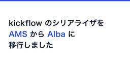

kickflow Tech Blog
https://tech.kickflow.co.jp/
株式会社kickflowのプロダクト開発本部によるブログ
フィード

kickflow のシリアライザを Alba に移行しました 1
1
kickflow Tech Blog
kickflow でエンジニアをしている川島です。 2026年7月、kickflow の全 API レスポンスを支えるシリアライザ約190ファイルを、ActiveModelSerializers（以下 AMS）から Alba へ一斉に切り替えました。 この記事では、大規模な置き換えを壊さずに進めるために何をしたかを、時系列で紹介します。
2日前

Disk I/O Budget 枯渇と監視を作り直した話 1
kickflow Tech Blog
新規事業本部でバックエンドエンジニアをしている渡辺です。 本記事では、検証用の Preview 環境で起きたDB障害の調査と、監視を作り直すまでの記録をまとめます。 ひとことで言えば、DB が急に詰まってログインなどが不安定になった障害です（本番の実ユーザーへの影響はありません）。 学びが多かったのは復旧よりも、主要メトリクスが正常に見えて原因特定に遠回りした過程でした。 1. 前提となるアーキテクチャ Disk I/O Budget という別軸のリソース上限 2. 何が起きたのか（症状） 3. なぜ「DB は正常」と読み違えたか 4. ログとメトリクスを時系列で突き合わせる 5. 仮説として…
5日前

kickflow QAチームの「AI実行」
kickflow Tech Blog
こんにちは、kickflow QAチームのNです。 kickflowのQAでは、機能変更ごとに用意したテストケースを、QAチームが内製したテスト管理ツール「KickRail」で管理しています。 KickRailを作った背景や仕組みについては、以前の記事「テスト管理ツール「KickRail」を内製した話」で詳しく紹介しています。 tech.kickflow.co.jp 最近は、実行条件が整ったテストケースの一部をAIに実行してもらっています。 私たちはこの取り組みを「AI実行」と呼んでいます。 この記事では、AI実行で何をしているのかと、AIの結果をQA担当が使える形にするための工夫を簡単に紹介…
9日前
TROCCOで開発生産性の指標を小さく始めてみた
kickflow Tech Blog
こんにちは。CREチームの西山です。 kickflowでは開発チームの生産性の指標として、GitHub GraphQL API から取得したプルリクエスト（以下、PR）数などの計測・集計を今期から始めました。 開発チームのマネージャーからの依頼を受け、CREチームでTROCCOを使ってデータ基盤を整備した事例をご紹介します！ 計測のゴール 開発生産性の文脈では、いわゆる「Four Keys（デプロイの頻度、変更のリードタイム、平均修復時間、変更失敗率）」で評価しているチームもあるのではないかと思います。 エリート DevOps チームであることを Four Keys プロジェクトで確認する |…
10日前
レビューもチケット管理もAIと仕組みに任せる ─ 開発チームから作業を減らす仕組みのつくり方｜AI DevEx Conference 2026 登壇レポート
kickflow Tech Blog
こんにちは。kickflowでエンジニアリングマネージャをしている森本です。 AIでコードを書く速度が上がっても、レビューやチケット管理といったコーディング以外の「作業」は自動では減りません。 kickflowの開発チームは、この作業をAIと仕組みに任せてきました。 例えば、影響の小さいPRのレビューとマージはAIに任せ、マージまでの滞留時間は約5時間から26分になりました。 この取り組みを、2026年7月22日に開催されたAI DevEx Conference 2026で「開発チームから作業を減らす仕組みのつくり方」というタイトルで発表しました。 本記事では、発表の概要と、スライドには書いて…
11日前
Vitest 組み込みの VRT を kickflow で動かしてみた
kickflow Tech Blog
Vitest で VRT をしている人のイメージ こんにちは、kickflow でエンジニアをしている芳賀です。 kickflow のフロントエンドは、Nuxt と Vuetify で構築しています。 コンポーネントテストは happy-dom の上で動かして挙動を検証していますが、スタイルはテストの対象外です。 つまり CSS やテーマの変更で見た目が崩れても、型チェックにもテストにも引っかからず、人の目だけが頼りです。 Vuetify のバージョンアップのたびに「どこか崩れていないか」を目視で追うのは、正直つらいですよね。 そんな折、Vitest 4 に VRT（Visual Regres…
12日前
Metabase MCPの「たぶん」を減らすために、dbtの資産を活かしてセマンティックタイプを整備した
kickflow Tech Blog
こんにちは。CREチームの西山です。 最近は業種や職種を問わず、AIが様々な業務で活用されるようになってきましたが、kickflowでは全社員にClaudeアカウントが付与されていることもあり、データ分析の現場でもAIを使う場面が増えてきました。 今回は、AIを使った分析の精度をさらに高めるために、Metabaseにセマンティックタイプとメタデータを整備した話を紹介します。 データ分析における課題とMCP利用の広がり kickflowのデータ分析基盤のスタックは、データウェアハウスにBigQuery、BIツールにはMetabaseを使用しています。 各チームの分析者は、プロダクトの機能改善や新…
16日前
flakyを可視化してから潰す：E2Eテストの安定化と高速化を同時に進めた話
kickflow Tech Blog
ミーアキャットは見張り役を立ててから群れ全体で採餌に専念する こんにちは、kickflow QAチームの川村です。 kickflowではおよそ1,200件のE2EテストをPlaywrightで実装し、深夜のnightly CIで並列実行しています。 テストの数が増えてくると、今度は「テストそのものの不安定さ」と「CIの実行時間」が開発のボトルネックになってきます。 実際、ある時点でメインのCIワークフローは直近30日で67.9%が失敗し、実行時間は通常50〜70分・最長180分と大きくばらついていました。 この記事では、E2Eテストの安定化（flaky削減）と高速化（CI時間短縮）を、まず計測…
18日前
oRPC を調査したら、Rails + Nuxt の自分たちのスタックが思ったより型安全だと気づいた話
kickflow Tech Blog
oRPC の調査イメージ こんにちは、kickflow でエンジニアをしている芳賀です。 最近、TypeScript 界隈で oRPC というフレームワークの名前をよく見かけるようになりました。「tRPC の開発体験そのままに、OpenAPI も一級市民として扱える」という触れ込みで、OpenAPI を軸に API を運用している身としてはかなり気になる存在です。 kickflow のバックエンドは Rails、フロントエンドは Nuxt で、API は OpenAPI の YAML を手書きする spec-first 運用をしています。この構成で日々開発していると「サーバーの実装とスキーマと…
19日前
鉄は熱いうちに打て、CI は Blacksmith で鍛えろ — runs-on 1行で1.76倍高速化
kickflow Tech Blog
Blacksmith 氏が runs-on を打ち直す様子（イメージ） こんにちは、プロダクト開発本部でエンジニアをしている秋山です。 昨今のプロダクト開発では AI は切っても切れない存在となりました。kickflow でも掲げているバリューの一つに AI 1st があり、日々 Claude Code や Codex をフル活用してプロダクト開発をしています。 昨今の AI モデルの高性能化、コーディング AI のチームナレッジ集積による業務効率化に加えて、開発メンバーの増員（ありがたいことにここ1年で倍の人数になりました！）による稼働量増加などの要因のかけ合わせで、リポジトリのプルリクエス…
25日前
Asanaにたまるバグチケを、月一でAIに棚卸しさせる
kickflow Tech Blog
Asanaにたまるバグチケを、月一でAIに棚卸しさせる こんにちは、kickflow QAチームのyanagiyaです。 今回は、Asanaにたまったバグチケットを月に一度AIがチェックし、すでに直っているかもしれないものをクローズ候補として提示するBotを作りました。 Asanaのチケット自体には手を触れず、確信度と根拠を添えて候補を挙げるところまでを自動でやります。 本記事では、このBotの中身と、実際に動かしてみてどうだったかを紹介します。
1ヶ月前
入社2ヶ月で開発チームの振り返りを始めたら、改善のサイクルが回り出した話
kickflow Tech Blog
こんにちは。kickflowでエンジニアをしている川島です。 2026年3月にエンジニアとして入社し、2ヶ月後の4月末から、開発チームの振り返り（レトロスペクティブ）を私主体で始めましたので、今回はそのお話をしたいと思います。 やりたいと思った理由は、大きく2つあります。 1つは相互理解です。現在のチームは1人が1機能を担当してリリースまで持っていくスタイルなので、隣の人がいま何をやっているのか、何を考えているのかが意外と見えません。お互いのことをもっと知りたいと思っていました。 もう1つは知見の共有です。日々開発していれば、辛みや学びが必ずあるはずです。良かったことは賞賛したいし、ペインがあ…
1ヶ月前
Playwrightと内部APIでkickflowのテナント設定を丸ごとコピーするCLIツールを作った話
kickflow Tech Blog
Playwrightと内部APIでkickflowのテナント設定を丸ごとコピーするCLIツールを作った話 こんにちは、kickflow QAチームのyanagiyaです。 今回は、kickflowテナントの設定を別のテナントへ丸ごとコピーするCLIツールを作りました。 ユーザー・組織図・経路・ワークフロー・オートメーション・管理者ロールといった大量の設定を、コマンドを実行するだけでコピー先テナントへ順に再現していきます。 本記事では、このツール tenant-copy をなぜ作ったのか、どう作ったのか、そして作る過程でつまずいたところを紹介します。
1ヶ月前
AIコードレビューに最適なモデルを探す
kickflow Tech Blog
こんにちは。CTOの小林です。 最近は実装だけでなくコードレビューもAIにやらせるチームが増えてきたと思います。今日は、そんなAIコードレビューに最適なモデルを探した話をします。 きっかけは料金改定 これまでkickflowでは長い間コードレビューに外部のコードレビューサービスを使用しており、その指摘を修正してから人間が最終レビューをする、という運用でやってきました。それで困っていなかったのですが、使用していたコードレビューサービスの仕様変更でプランあたりのレートリミットが一気に厳しくなり、ちょっと立て込むとすぐ上限に張り付くようになりました。しかも従来はクレジットを買い足せばその場をしのげた…
2ヶ月前
AI Engineering Summit Tokyo 2026 に登壇しました
kickflow Tech Blog
こんにちは。開発チームでエンジニアリングマネージャーをしている森本です。 6/8〜9 に開催された AI Engineering Summit Tokyo 2026 というイベントに登壇したのでレポートしたいと思います。
2ヶ月前
Claude Desktopでテスト設計を完全自動化する
kickflow Tech Blog
アリの行列は個体の単純なルールの連鎖から、最適な食料輸送路を自律的に構築する こんにちは、kickflow QAチームの川村です。 PRが「QA可能」になったら、テスト項目書を作って、レビューして、テスト管理ツールに登録して、Slackでチームに共有する。 この一連のテスト設計業務を、Claude Desktopのプラグインで完全に自動化しました。 Slack・Asana・GitHub・テスト管理ツール・esaの5つのサービスをMCPで横断的に連携させ、Claude Desktopの定期実行により全ステップが自動実行されます。 本記事では、このプラグインの設計と、4つのSkillを繰り返し改善…
2ヶ月前
毎朝の自動テスト結果をKickRailで確認する
kickflow Tech Blog
自動テスト結果をKickrailに集約した話 こんにちは、QAチームのNです。 先日、社内テスト管理ツール「KickRail」についての記事が公開されました。 テスト管理ツール「KickRail」を内製した話 この記事では、川村さんがKickRailを立ち上げてくれた背景や、Qaseからの移行、MCP連携まで含めた全体像が紹介されています。 今回はその続きとして、KickRailという土台に、PlaywrightとPostmanで毎晩実行している自動テストの結果をどう載せていったかを書きます。
2ヶ月前
テスト管理ツール「KickRail」を内製した話
kickflow Tech Blog
クマノミは自分の住処にするイソギンチャクを選び、共生関係を育てる こんにちは、kickflow QAチームの川村です。 QAチームで使っていたテスト管理ツールを、Qaseから自作の KickRail に乗り換えました。 3日でアルファ版を立ち上げ、その10日ほど後にはQaseから完全リプレイス。 約6万件のテストケースが新しい住処に引っ越し、いまも安定稼働しています。 本記事では、なぜ作ったか、何をどう作ったか、そしてMCPファースト設計でAIエージェントから直接操作する仕組みを紹介します。
2ヶ月前
実装から「仕組み」のパラダイムシフトへ。TSKaigi 2026で感じた TypeScript の現在地
kickflow Tech Blog
TSKaigi 2026 プロダクト開発本部でエンジニアをしている秋山です。 去年に引き続き TSKaigi 2026 に参加してきました。 去年は個人で参加しましたが、今年は kickflow の福利厚生であるカンファレンス参加費補助制度をフル活用しました！ 相も変わらず人気のカンファレンスで、自分も販売開始時間に待機してオープンと同時に申し込んだクチですが、現地参加チケットは発売後間もなく売り切れとなってしまいました。TypeScript の人気の高さが伺えますね。
2ヶ月前
Supabase Storage のバックアップ基盤を Google Cloud + Pulumi で構築した
kickflow Tech Blog
Supabase Storage backup to Google Cloud 新規事業本部でバックエンドエンジニアをしている渡辺です。 今回は、新規事業のエンタープライズ向け SaaS で実際に進めていた Supabase Storage のバックアップ整備についてまとめます。ユーザーのアップロードしたファイルをどう守るかはプロダクトの土台部分の話で、地味ではありますが、手を入れてみるとけっこう考えることが多かった領域でした。 はじめに なぜ Storage のバックアップを自前で用意する必要があるのか 全体アーキテクチャ データフロー 技術選定 rclone を選んだ理由 Cloud Ru…
3ヶ月前
RubyKaigi 2026参加レポート — 初めてのスポンサー出展
kickflow Tech Blog
五稜郭タワーを望む夜景。RubyKaigi期間中はルビー色にライトアップされていた はじめに kickflowでバックエンドエンジニアをしているワイハナです。Rubyに関しては初心者で、本格的に触り始めたのは入社（2026年2月）してからです。 弊社は、2026年4月22日から24日にかけて函館で開催された RubyKaigi 2026 にスポンサーとして参加しました。今回が初めてのRubyKaigiスポンサー出展となります。エンジニア5名、人事3名の合計8名で函館へ向かい、3日間ブースを運営しながら、各自セッションにも参加しました。 提供しているクラウドワークフローシステムはRuby on …
3ヶ月前
AI 時代を乗りこなすために Story Point を導入した話（試験中）
kickflow Tech Blog
AI を使った Story Point の導入 こんにちは、kickflow開発チームの芳賀です。 AI コーディング、いいですよね。AI なくしてはもう作業が回らない時代まで来ちゃいましたね。体感では作業効率は約 2 倍に向上しました。 あと、ちょっと前までは「プロンプトをいかにチューニングして効率よくするか」が焦点だったのに、いつの間にか「AI をどう管理して進めるか」に焦点がステップアップしているのも興味深いですよね。 今回は、そんな AI コーディングの恩恵を受けつつも同時にもたらされた「つらみ」にどう対応していっているかご紹介します。
4ヶ月前
深夜のE2Eテスト失敗をClaude Codeが自動修正してPRを作る仕組みの構築
kickflow Tech Blog
フクロウは夜間に獲物の位置を音だけで正確に特定し、静かに仕留める こんにちは、kickflow QAチームの川村です。 E2Eテストの数が増えてくると、毎朝のCI失敗対応が地味に時間を取られます。 kickflowでは約900のPlaywrightテストを深夜のnightly CIで実行していますが、プロダクト側の仕様変更によりテストが失敗することがあります。 翌朝出社して、失敗ログを確認し、原因を特定して、セレクタを修正して、PRを作成する。 この繰り返しを自動化できないかと考え、Claude Codeに深夜のうちに分析から修正PR作成まで全部やってもらう仕組みを作りました。 本記事では、こ…
4ヶ月前
OpenAPIドキュメントツールScalarのすすめ
kickflow Tech Blog
こんにちは、CTOの小林です。 新規事業で開発者向けAPIを提供することになり、APIドキュメントのツール選定をすることになりました。 kickflowではRedocly社が提供するOSS版のRedocをGitHub Pagesでホストして使っています。 developer.kickflow.com Redocに大きな不満があるわけではないのですが、新規事業は技術スタックもチーム体制もkickflowとは異なるので、改めてゼロベースで選定し直すことにしました。 結論から言うと Scalar API Referenceを採用した ので、比較検討の過程と採用理由を書いていきます。
4ヶ月前
「なんとなく」でリリースしない。kickflowが定めたAI機能の品質基準と評価プロセス
kickflow Tech Blog
「なんとなく」でリリースしない。kickflowが定めたAI機能の品質基準と評価プロセス こんにちは、kickflow QAチームのmakiです。 kickflowでは現在、複数のAI機能を提供しています。 以前、AI申請前レビュー機能の品質評価プロセスをご紹介しましたが、そのとき評価の進め方を手探りで組み立てた経験から、ひとつの課題が見えてきました。 tech.kickflow.co.jp 「この精度なら出していいのか？」「どこまでテストすればリリースできるのか？」 機能ごとに判断基準がバラバラだったことから、AI機能全体で統一した品質基準が必要だと感じました。 従来のソフトウェアであれば、…
5ヶ月前
PlaywrightのCIが80分→35分に：実行時間ベースのバランスドシャーディングを自作した話
kickflow Tech Blog
渡り鳥はV字編隊の先頭を交代することで、群れ全体の消耗を均等にする こんにちは、kickflow QAチームの川村です。 今回は、PlaywrightのE2Eテストを12並列で実行しているにもかかわらず、特定のシャードだけが80分かかってボトルネックになっていた問題を、実行時間ベースのバランスドシャーディングを自作して解消した話をします。 以前の記事「ローカル環境で動くCypressテストの並列実行を自作して高速化した話」で「今後の展望」として触れた「実行時間に基づいたインテリジェントなテスト分割」を、今回CIのPlaywright環境で実現しました。 テストの並列実行はCI高速化の定石ですが…
5ヶ月前
kickflow MCP サーバーのトークン数を97%削減しました。が、しかし…
kickflow Tech Blog
こんにちは、プロダクト開発本部でエンジニアをしている秋山です。 みなさん、普段から MCP サーバーを活用していますか？ 一時期、シェルコマンドのラッパーとして MCP サーバーを使っているケースも見受けられたものの、よりトークン消費数の少ない Agent Skills の台頭により以前よりは下火になった印象ですが、外部サービスとの認証付き連携においては依然として必要な仕組みです。 そして、実は kickflow も MCP サーバを公開しているのを知っていましたか？ github.com ひっそりと公開されていて知らない人も多そうなので、この記事では kickflow MCP サーバーの宣伝…
5ヶ月前
Playwright CodegenとClaude CodeでE2Eテスト作成をノーコード化する
kickflow Tech Blog
粘菌は複雑な迷路でも、最短経路を自然に見つけ出す こんにちは、kickflow QAチームの川村です。 「E2Eテストを書きたいけど、コードを書くのはハードルが高い」。 こうした悩みを持つQAメンバーは多いのではないでしょうか。 kickflowでは、Playwright CodegenとClaude Codeを組み合わせた /codegen-test スキルを開発し、この課題を解決しました。 ブラウザをポチポチ操作するだけで、AIがコードを自動整形し、すぐに使えるテストファイルが出力されます。 チームでは実際に、プログラミング経験が浅いQAメンバーがPlaywrightを利用した新規E2Eテ…
6ヶ月前
開発からリリースまで「自動で流れる」チケット管理
kickflow Tech Blog
ミツバチは巣の六角形構造により、最小の材料で最大の効率を実現する こんにちは、kickflow QAチームの川村です。 「開発チームからQAへの依頼がSlackで埋もれてしまう」「チケットのステータス管理が煩雑で、今どの段階にあるかわかりにくい」といった課題を抱えていませんか？ 本記事では、kickflowのQAチームがAsanaとSlackを連携させて構築したチケット管理ワークフローをご紹介します。 開発からリリースまで、情報が自然と流れる仕組みを実現しています。
6ヶ月前
QA業務効率化：SlackリアクションをトリガーにAsanaの不具合をAI検索する
kickflow Tech Blog
Slack絵文字でAsanaの不具合検索を自動化 こんにちは、kickflow QAチームのmakiです。 今回は、Slackで絵文字を押すだけでAsanaの既存不具合を検索できる仕組みを作ったので、その実装方法と効果をご紹介します。
6ヶ月前